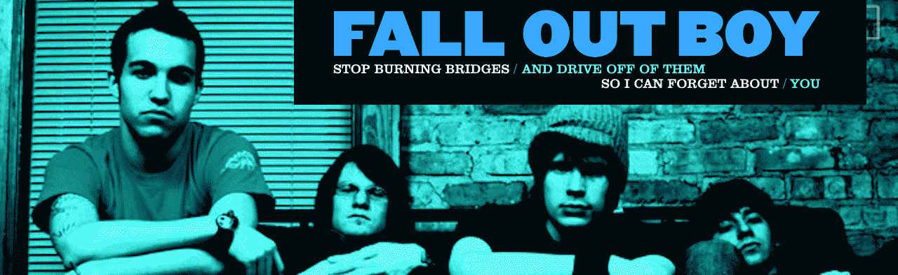
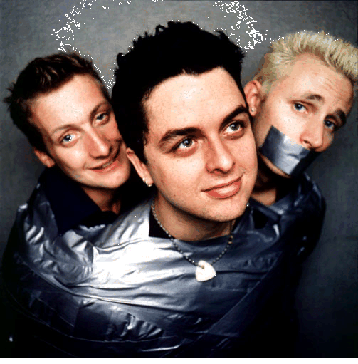
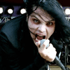
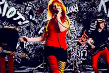
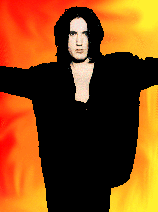

Where you can find me! :]
Newgrounds.comBandcamp.com
YouTube.com
Instagram.com


|
 |
|
 |
|
 |
| Name: | kas !! |
| Age: | 23 |
| Birthday: | feb 27th !! |
| Pronouns: |
they/she or she/they depending on how fem i feel on a given day |
| Gender: |
transfem / genderfluid. it's both to me because when i do feel mostly feminine some days it's as if i feel nothing else. yknow? |
| Favorite Bands: |
fall out boy, paramore, nine inch nails, green day, the used, mcr, panic! at the disco nirvana, drmanhattan |
| Movies and TV Shows: |
raising hope, young sheldon, house m.d., the good place, parks and rec, all the jackass films, the social network, steve jobs, the newsroom |
| Hobbies: | makin' tunes, coding sites, working 24/7 :3 |
